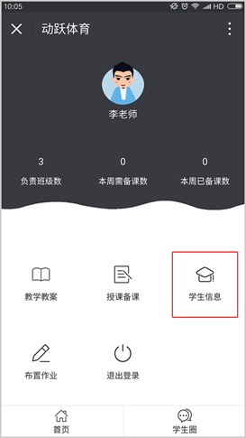
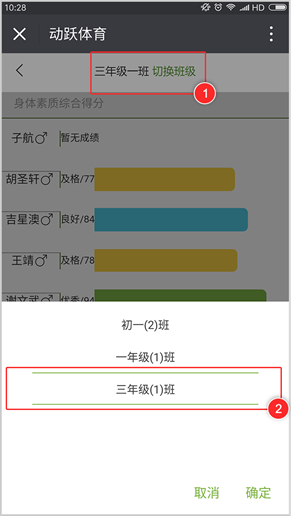
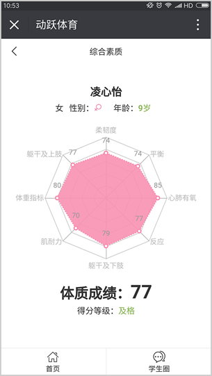

<div class="title">如何查看学生信息</div>

<div class="on">视频教程：</div>
<div class="youkuplayer" ykVid="XMzU5MjUyMTA0NA"></div>

<div class="on">1. 在教师端页面，点击【学生信息】，进入学生信息页面。</div>

<div class="on">2. 页面顶部的有班级信息，轻触【切换班级】，可切换查看教师管理的所有不同班级。</div>

<div class="on">3. 页面展示该班级下所有学生的得分成绩表，点击学生信息，可查看该学生的详细身体素质分析。</div>

<div class="on">4. 学生体质素质分析与综合素质图表展示。</div>


<script id="_youkujs_" type="text/javascript" src="//player.youku.com/jsapi"></script>
<script type="text/javascript" src="../statics/js/each/helpvideo.js"></script>